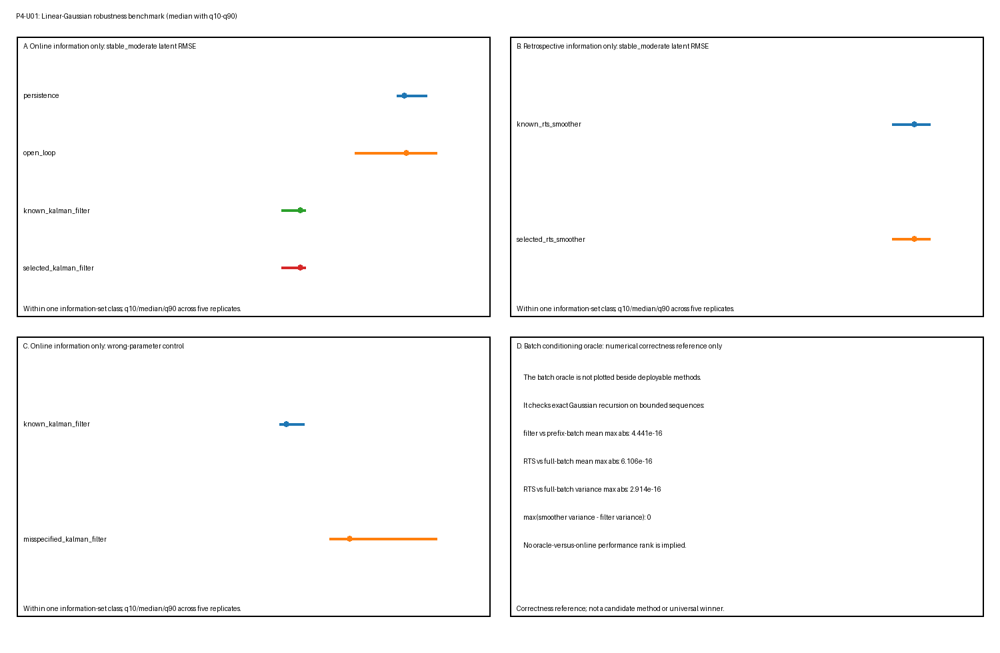

P4-U01 — 线性高斯鲁棒性基准测试
P4-U01 — 线性高斯鲁棒性基准测试
科学问题
在一组带已知合成真值的有界标量线性高斯状态空间模型（LGSSM）中，简单参考、精确已知参数推断、直接高斯条件化与有限网格插件变体在声明信息集下何处适用、鲁棒或可观测地脆弱？
这是任务特定鲁棒性研究，不是通用排行榜。它只在声明模拟器、场景、度量、划分与信息集内比较表现。它不确立机制、因果性、生物有效性、真实数据有效性或普遍方法优越性。
真值
每个独立重复从
\[ z_{t+1}=a z_t+w_t,\qquad w_t\sim\mathcal N(0,q), \]
\[ x_t=z_t+v_t,\qquad v_t\sim\mathcal N(0,r), \]
生成单独训练、验证与测试序列，带平稳初始化 \(z_1\sim\mathcal N(0,q/(1-a^2))\)。生成器为评分保留潜真值，但选择与推断不接收它。可执行包装 toy-models/linear-gaussian-inference-ladder.py 中的稳定数值例程；它不编辑或重新解读 Phase 3 结果。清单把该关系记录为 actual_executable_routine_reuse，并用 SHA-256 冻结复用源身份；验证拒绝路径、角色或摘要漂移。
生成
生成是独立阶段，只接收场景标识符、重复、划分与序列索引。它创建独立平稳 LGSSM 路径与观测，然后只应用场景预先声明观测掩码。它不调用选择、推断或评分。
场景网格
核心加压力网格每个场景五个独立重复、每个划分两个序列。它刻意保持足够小以支持字节级再生。
| 场景类 | 预先声明变化 |
|---|---|
| 转移稳定性 | 固定 \(q=0.10,r=0.40,T=60\) 下 \(a\in\{0.60,0.85,0.97\}\) |
| 过程/观测噪声比 | 过程主导 \((q,r)=(0.40,0.10)\) 与观测主导 \((0.025,0.80)\) |
| 序列长度 | 相对 \(T=60\) 参考的 \(T=24\) 与 \(T=120\) |
| 缺失块 | \(T=80\) 序列中的连续半开块 \([28,48)\) |
| 错误参数 | 真实 \((0.85,0.10,0.40)\) 对预先声明推断 \((0.60,0.025,0.80)\) |
| 重置边界失败 | 跨两条独立测试序列的故意无效滤波器延续 |
| 近单位根压力 | \(a=0.99,q=0.02,r=0.40,T=120\) |
网格在解读前固定于 manifest.json。没有场景在看到失败后被调走。
阴性对照与压力情形
错误参数场景冻结推断用 \((a,q,r)=(0.60,0.025,0.80)\)，而生成保持 \((0.85,0.10,0.40)\)。重置对照故意跨独立序列边界携带后验，并把其首估计与正确重置滤波器比较。近单位根场景在 \(a=0.99\) 检验长时域与数值敏感性。这些对照即使退化表现也被保留。
重复与确定性种子
每个场景五个独立重复，每个划分两条独立生成序列。种子从主种子、SHA-256 推导场景代码、重复、划分代码与序列索引映射。映射不依赖执行顺序。
划分纪律
训练与验证观测只对有限网格选择可用。冻结所选参数随后传给测试推断。测试观测由声明测试时间信息集使用；测试潜真值直到单独评分阶段才可用。定义划分的是完整独立序列，而非相邻时间点。
方法与信息集
- stationary mean（平稳均值）： 固定零参考；
- persistence 与 open-loop（持续性/开环）： 在线观测历史参考；
- known-parameter Kalman filter（已知参数卡尔曼滤波器）： 使用到当前时间为止观测的在线后验；
- fixed-interval RTS smoother（固定区间 RTS 平滑器）： 使用完整声明区间的回顾性后验；
- direct batch Gaussian conditioning（直接批量高斯条件化）： 精确有界回顾性神谕；
- finite-grid selected filter/smoother（有限网格所选滤波器/平滑器）： 参数在训练/验证观测上选择并在测试推断前冻结；
- wrong-parameter filter/smoother（错误参数滤波器/平滑器）： 场景特定误设对照；以及
- false-continuation filter（虚假延续滤波器）： 重置边界阴性对照，显式标记为使用无效跨序列历史。
在线、回顾性与神谕信息集不被合并。平滑器可以使用未来观测，因此不是可部署的滤波器在线竞争者。批量结果是实现神谕，不是具有相同计算角色的候选。
参数选择
有限网格包含 \(a\in\{0.60,0.85,0.97\}\)、\(q\in\{0.025,0.10,0.40\}\) 与 \(r\in\{0.10,0.40,0.80\}\) 的 27 个预先声明元组。每个元组由平均训练创新 NLL 加平均验证创新 NLL 评分。并列按字典序打破。选择函数精确接受四个数组——训练观测、训练掩码、验证观测与验证掩码——没有可以通过其提供测试数据或潜真值的参数。投毒检查确认改变被排除测试观测或潜真值使所有得分与所选元组不变。
推断
推断接收观测、掩码、序列边界与已知、所选或预先声明错误参数。每个序列通常从平稳先验独立调用。虚假延续对照是唯一故意边界违反，并带无效跨序列信息历史标记。
评分
只在推断输出冻结后，评分才加入测试潜真值。原始 target 元数据是度量特定而非仅从方法继承：
| 度量 | 原始目标与定义 |
|---|---|
latent_rmse |
按方法为逐点、在线或回顾性状态；均方潜状态误差的平方根 |
predictive_nll |
one_step_observation_prediction；只在观测测试时间上的平均一步预测负对数似然 |
interval_95_coverage |
固定参数下逐点在线或回顾性状态区间覆盖 |
mean_posterior_variance |
平均在线或回顾性状态后验方差 |
inside_missing_block_rmse / outside_missing_block_rmse |
限于声明时间区域的状态 RMSE |
selection_parameter_l1 |
selected_parameter_tuple；\(|\hat a-a|+|\hat q-q|+|\hat r-r|\) |
oracle_mean_discrepancy |
numerical_correctness_reference；最大递归对直接条件化均值差异 |
reset_first_state_abs_difference |
boundary_reset_diagnostic；虚假延续与正确独立重置之间的首状态差异 |
对每个场景、重复、方法与度量，两条独立测试序列与所有适用时间点在计算一个重复级值前合并。预测 NLL 排除掩蔽时间。diagnostics.json 随后跨五个独立重复级值计算 q10、中位数与 q90；它不把单个时间点当作重复。参数 L1 刻意未归一化，把 \(a\)、\(q\) 与 \(r\) 不同数值尺度上的量相加。它是该基准内透明网格选择差异，不是无量纲距离，不适合跨坐标或跨不同缩放模型比较参数重要性。
失效与适用性标签
results.csv 每个场景 × 重复 × 方法 × 度量包含一个原始行。每行恰好一个状态：
ok：适用且数值有效；nonconvergence：数值推断失败；invalid：畸形或无效计算；inapplicable：方法或信息集不支持该度量。
非 ok 行保留机器可读原因而非消失。
产物契约
产物目录精确包含 manifest.json、results.csv、diagnostics.json 与 summary.png。清单固定场景、划分、种子、方法、度量、容差、命令、排序、恢复语义与 SHA-256 哈希。
结果
diagnostics.json 为每个场景 × 方法 × 度量组分别报告中位数、第 10 百分位、第 90 百分位、ok 率、失败率与适用性率。在中等参考场景中，已知滤波相对在线历史参考降低中位潜 RMSE。在其单独回顾性信息集中，RTS 平滑具有更低回顾性 RMSE。直接批量条件化被单独用作数值正确性参考，不与被部署方法视觉排名。在缺失块中，回顾性推断可以用较晚观测修正扣留区间。预先声明错误参数增加中位滤波器与平滑器误差。这些是有条件观测，不是全局排名。

每个绘制比较面板只包含一个信息集类。批量条件化面板只报告数值差异；它不是表现排名面板。
解读界限
基准只确立模拟器条件经验行为与实现一致性。已知合成真值下更低潜误差不是方法恢复生物机制、发现因果律、辨识唯一潜坐标或将迁移到真实数据的证据。相对顺序可以随任务定义、信息可用性、参数网格、度量、序列设计与模拟器误设改变。此处结果不授权跨任务总分、普遍胜者、Phase 5 工作或真实数据主张。
可复现性
主种子与场景哈希映射使重复生成独立于遍历顺序。results.csv 使用唯一规范行键与确定性排序。验证器检查：
- 哈希与精确四文件产物集；
- 唯一行键与规范排序；
- 逐字节相同干净再生；
- 逐字节相同反转场景/重复遍历；
- 从有效部分
results.csv的逐字节相同恢复； - 拒绝损坏、陈旧、重复、未知键与不完整部分结果；
- 选择对测试观测与潜真值投毒的不可变性；
- 滤波的因果前缀不变性；
- 独立逐序列重置等价与虚假延续的可见失败；
- 已知滤波器与前缀批量条件化一致；
- RTS 均值与方差与完整批量条件化一致；
- 有限值或显式失败标签而非静默省略；以及
- 故障注入非有限预测得分、负后验方差与缺失推断结果产生带机器可读原因的显式
invalid行。
运行：
/Users/bytedance/.cache/codex-runtimes/codex-primary-runtime/dependencies/python/bin/python3 benchmarks/linear-gaussian-robustness.py --generate
/Users/bytedance/.cache/codex-runtimes/codex-primary-runtime/dependencies/python/bin/python3 benchmarks/linear-gaussian-robustness.py --verify这些命令刻意使用清单中记录为 commands.python_executable 与 runtime.python_executable 的捆绑工作区 Python 运行时；本 shell 中的系统 python3 不提供所需 NumPy 运行时。
审查记录
独立科学审查员最初因摘要图中的信息集分离与度量目标/聚合语义返回 REVISE。一轮有界修正后，对这些发现的聚焦复审返回 PASS。
独立实现审查员最初因选择能力边界、恢复验证与评分/非有限失败标签返回 REVISE。同一有界修正轮次后，聚焦复审返回 PASS。
两次审查都是只读且独立于执行者。在独立科学与实现 PASS、里程碑验证与记录的审查决定下显式所有者批准后，对象为 L1/stable。稳定记录该声明合成基准的有界验收；它不扩大证据或解读边界。